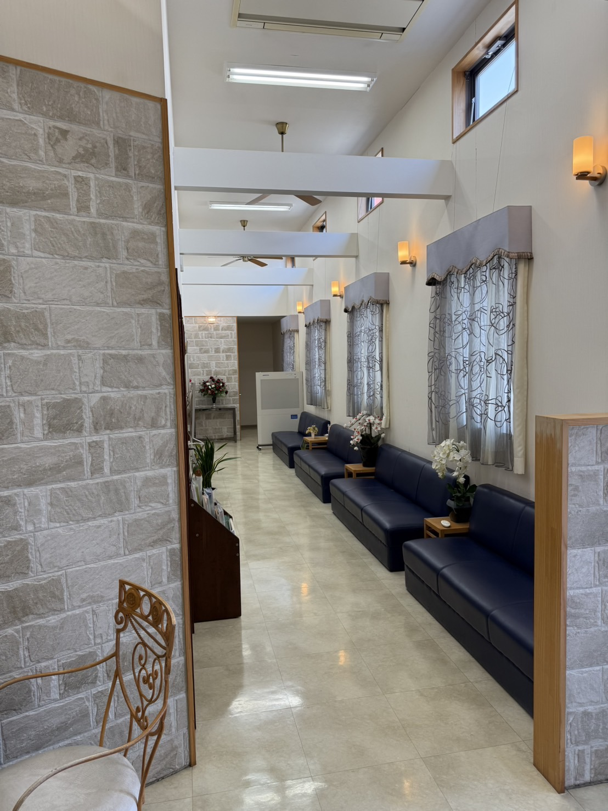
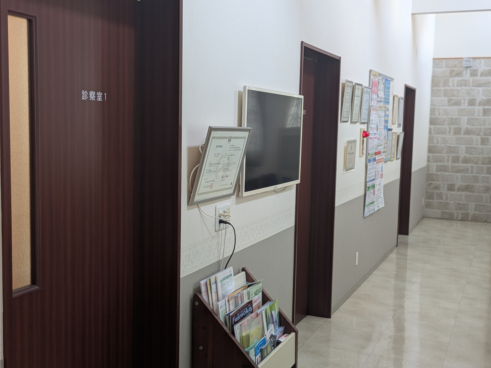

診療時間
| 診療時間 | 月 | 火 | 水 | 木 | 金 | 土 | 日 |
|---|---|---|---|---|---|---|---|
| 9:00〜12:30 | ● | ● | ● | ● | ● | ● | × |
| 14:00〜17:30 | ● | ● | ● | × | ● | × | × |
お知らせ
NEWS
～感謝を込めて～
早良区飯倉に開院より24年。当院が今日まで診療を続けてこられましたのは、ひとえにご来院くださる患者さまとそのご家族、そして地域の皆さまの温かい支えとご理解があってこそと心より感謝申し上げます。
このたび、25周年という節目を前に、当院初となるホームページを開設いたしました。これまでの対面でのつながりを大切にしながらも、ご通院中の患者さまや初めてご来院いただく方に、よりスムーズな通院環境を整え、正しい情報をお届けするための新しい一歩です。
気づけば、ご家族2代にわたって通ってくださる患者さまや20年以上にわたりご来院いただいている患者さまもおられます。
この24年間に賜りました多くのご縁。そして、日々の診療の中で、患者さまのお話を伺い、健康について一緒に考え、その時々の状態に合わせて診療していく。その積み重ねの時間が、私にとって「かかりつけ医」としての研鑽を積み続ける原動力となっております。
これからも、ご通院中の患者さまはもちろん、これから新しく出会う皆さまにも安心して相談していただける身近なクリニックでありたいと思っております。
皆さまの日常が、健やかで心穏やかでありますように。当院が、これから先もお役に立てれば嬉しく存じます。
令和8年9月吉日
院長 安永 芳樹
当院の特徴
専門医による幅広い
超音波検査
当院では、日本消化器病学会認定消化器病専門医が腹部領域（肝臓、胆のう、すい臓、腎臓など）の観察と診断を行っています。また、頸動脈や甲状腺疾患の評価のほか、泌尿器領域（膀胱、前立腺）、婦人科領域（子宮、卵巣）の検査にも対応しています。
必要なときの専門医療への橋渡し
当院での診療や検査の結果、より詳しい検査や専門的な治療が必要と判断した場合には、地域の基幹病院や適切な専門医療機関をご紹介いたします。身近な「かかりつけ医」として受診からその先の治療まで、安心してご相談いただける体制を整えています。
地域の健康を支える
健康診断・企業健診
当院では、特定健診をはじめ、地域の皆さまの健康診断や企業様の定期健康診断・雇入時健康診断にも対応しています。日本医師会認定産業医が、従業員さまの健康管理を丁寧にサポートいたします。
診療案内

消化器疾患、甲状腺疾患、生活習慣病をはじめとする内科全般から、健診後の再検査まで幅広く対応しております。基幹病院で治療を終えられた方の経過観察も、連携を取りながら承っております。地域の皆さまの「かかりつけ医」として、どうぞお気軽にご相談ください。
「要検査」は、すぐに病気と決まったわけではありません。指摘された内容について、当院の考え方や検査の流れをご紹介します。
詳しく見る →超音波検査
上腹部エコー（肝臓、胆のう、すい臓、腎臓）
下腹部エコー（膀胱、前立腺、子宮、卵巣）
頸部エコー、甲状腺エコー
消化器病疾患
肝障害、肝腫瘍、胆石、胆のうポリープ、腹痛、腹部膨満、消化器がん術後
詳しく見る →甲状腺・内分泌疾患
甲状腺腫瘍、慢性甲状腺炎、バセドウ病
詳しく見る →生活習慣病
糖尿病、脂質異常症、高血圧症他
詳しく見る →泌尿器疾患
膀胱炎、膀胱腫瘍、前立腺肥大、前立腺腫瘍、排尿痛、頻尿、血尿
詳しく見る →内科疾患
健診の再検査・アレルギー疾患・呼吸器疾患
詳しく見る → 予約制ワクチン・予防接種
インフルエンザ、肺炎球菌、帯状疱疹
詳しく見る → 予約制健康診断・企業検診・特定健診
一般健診、雇入時健診、特定健診 他
詳しく見る → 予約制市の健診
よかドック、肝炎検査、がん検診 他
詳しく見る → 予約制発熱・感染症
風邪症状、発熱、咳、下痢症状 他
詳しく見る →その他の検査
胸腹部レントゲン、呼吸機能検査、経皮的動脈血酸素飽和度測定、心電図、24時間心電図
詳しく見る →← スワイプしてご覧ください →


基本情報

やすなが内科クリニック
内科 消化器科
住所
〒814-0161
福岡市早良区飯倉4丁目8-5-2
院長
安永 芳樹
駐車場
12台完備（送迎スペースあり）
駐輪場
あり
交通機関（西鉄バス）
西新方面から：飯倉バス停前
野芥方面から：飯倉バス停より徒歩1分
お電話・予約・お問い合わせ
● 受付時間
午前 9:00 〜 11:30
午後 14:00 〜 16:30